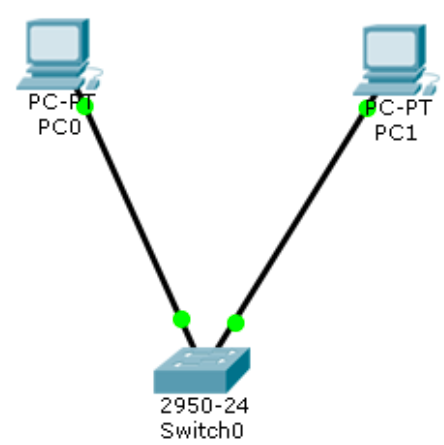
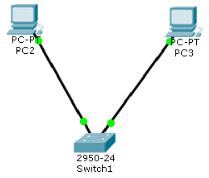
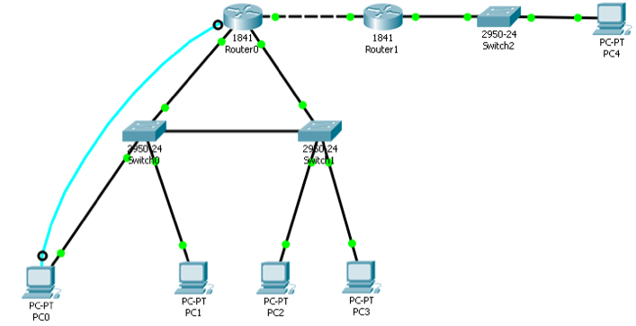

Настройка локальной сети передачи данных:
Настройка коммутаторов и маршрутизаторов
Вариант № 4
Расчет диапазона сетей
| |
LanA |
LanB |
LanC |
| Количество узлов |
20 |
201 |
200 |
| Subnet |
192.168.4.0 |
172.16.4.1 |
10.10.4.1 |
| Mask |
255.255.255.224 |
255.255.255.224 |
255.255.255.192 |
Broadcast |
192.168.4.31 |
172.16.4.2 |
10.10.4.31 |
1: Разместить на рабочем поле коммутатор и два компьютера и соединить их

2: Добавить на рабочее поле еще один коммутатор с двумя компьютерами и настроить адресацию из другой подсети

3: Настроить статическую маршрутизацию между сетями
От Router1 к Lan C, От Router0 к Lan A, от Router0 к Lan B:

Расчет диапазона сетей
| Устройство |
IP-адрес |
Маска |
Шлюз |
| PC0 |
192.168.4.29 |
255.255.255.224 |
192.168.4.1 |
| PC1 |
192.168.4.30 |
255.255.255.224 |
192.168.4.1 |
| PC2 |
172.16.4.2 |
255.255.0.0 |
172.16.4.1 |
| PC3 |
172.16.4.3 |
255.255.0.0 |
172.16.4.1 |
| PC4 |
10.10.4.2 |
255.255.255.0 |
10.10.4.1 |
| R0 0/0 |
15.15.4.1 |
255.255.255.252 |
- |
| R0 0/1 |
10.10.4.1 |
255.255.255.0 |
- |
| R0 0/2 |
172.16.4.1 |
255.255.0.0 |
- |
| R1 0/1 |
192.68.4.1 |
255.255.255.224 |
- |
| R1 0/2 |
15.15.4.2 |
255.255.255.252 |
- |
Установить банер на сетевое оборудование: banner motd [баннер]